测序技术原理及应用¶
文章来源：illumina、Sanger、第三代和第四代测序技术原理
一. Sanger测序
1953年4月，Watson和Crick关于DNA双螺旋结构的文章发表于Nature，成为生物学研究的里程碑。此后，生命科学进入了DNA解密的时代。道德经所言“道生一，一生二，二生三，三生万物”，这“三生万物”需要的竟然仅仅是四种碱基的排列组合。生命的秘密藏在DNA序列中，首要任务，便是测出这序列内容。1970年，吴瑞先生建立了位置特异性引物延伸的测序方法，开了DNA测序技术的先河。随后在1975年，Sanger建立了自己的测序方法。1977年Gilbert等人建立了化学降解法，同年，Sanger改进了之前的方法，确立了日后第一代测序的主流方法：Sanger测序法。
Sanger测序加快了对于微生物和单个基因研究的脚步，然而面对真核生物复杂而庞大的基因组，早期测序方法低通量、高成本、强劳动的弊端是开展组学研究的主要障碍。新一代测序技术呼之欲出，2003完成的人类基因组计划更是为大规模组学数据时代的开启敲响了钟声。
Sanger测序是以这一突破性技术的发明者，Frederick Sanger博士的名字命名。在40多年前的上世纪70年代，Sanger博士发明了这一测序方法。他提出快速测定DNA序列的技术“双脱氧终止法”，也被称作“桑格法”的双脱氧核苷酸链终止法，因此与另外两名科学家共同获得了1980年诺贝尔化学奖。在Sanger测序期间，DNA聚合酶通过向生长链（延伸产物）中加入核苷酸来复制单链DNA模板。链延长发生在引物的3'端，通过与模板的碱基对互补来选择加入到扩增产物中的脱氧核苷酸。DNA聚合酶也可以掺入核苷酸碱基的类似物。由Sanger于1977年发明的DNA测序的双脱氧终止法通过引入2'，3'-双脱氧核苷酸作为底物终止DNA链进一步延伸，当双脱氧核苷酸加入到DNA链的3'末端时，DNA链的延长被选择性地终止于A，C，G或T。这是因为一旦引入双脱氧核苷酸，它比单脱氧核苷酸缺少一个3'-羟基，无法结合下一个组分，因此DNA链进一步的延伸被终止。
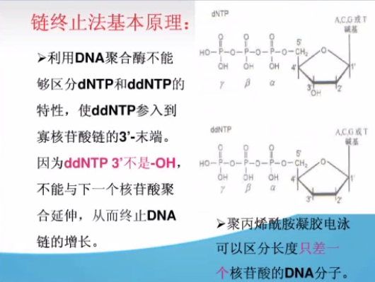
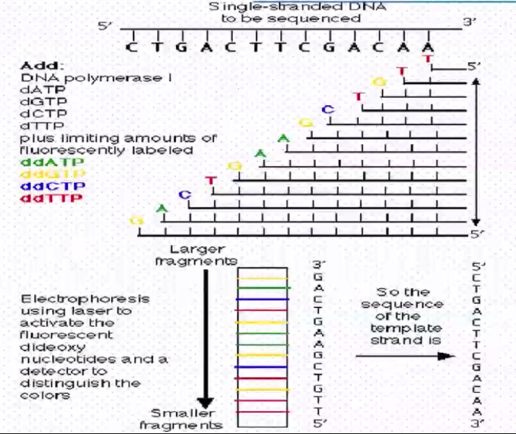
首先是将一小段引物结合在目的区域附近。在存在四种核苷酸的条件下，聚合酶通过将与模板DNA链互补的核苷酸加在引物末端，使引物延伸。为找到DNA序列的具体组成，我们需要使这一反应在特定的位置终止，以便鉴定出这一DNA片段最末端的碱基。Sanger通过去除核糖核苷酸的一个氧原子实现了这一目标。这一核苷酸被称为双脱氧核苷酸。这就好像向齿轮中插入一把扳手。聚合酶将无法继续向这一DNA链中加入正常的核苷酸。延伸终止后，需要鉴定出末端的核苷酸。我们通过一种特殊的荧光染料来确定链末端的核苷酸种类，准确的说就是通过4种特殊的颜色来鉴定。Sanger测序生成各种不同长度的延伸产物，每个延伸产物的3’末端带有一个双脱氧核苷酸。
荧光染料包括四种不同发射波长的染料标记的双脱氧核苷酸或染料标记的引物，因为每种染料在光激发下产生不同的荧光信号，可由扩增产物的荧光染料鉴定出3'末端双脱氧核苷酸为A，T，C或G。
Dye terminator chemistry法：四种双脱氧核苷酸各自用不同的荧光染料标记。
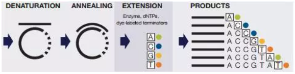
Dye primer chemistry法：四个不同的测序引物各自用不同的荧光染料标记。
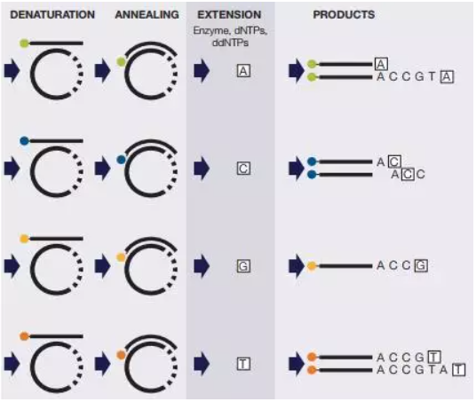
之后，通过毛细管电泳，简称CE（Capillary Electrophoresis，CE），分离延伸产物。DNA分子通过电流注入一根充满凝胶聚合物的长毛细管中。在CE电泳过程中，施加电场使带负电的DNA片段向正极迁移。DNA片段在介质中迁移速率和其分子量成反比。这一过程可以依据长度大小将延伸产物分离，分辨率可达到一个碱基的差异。当带有染料标记的DNA片段通过毛细管末端的小窗时，一束激光将染料激发。被激发的染料发射出特定波长的光并被光探测器检测到。之后，软件解读这一检测到的信号并将其翻译为一个碱基检出结果。测序反应在存在全部四种终止核苷酸的条件下进行时，最终将得到一组逐个碱基测定和分离的DNA片段。最后，您将得到一个通过不同颜色电泳图谱表示DNA序列的数据文件啦。
在BigDye terminators,，BigDye primers和BigDye Direct中，使用的荧光染料具有更窄的发射光谱和较少的荧光光谱重叠，可以产生较低的背景噪音。
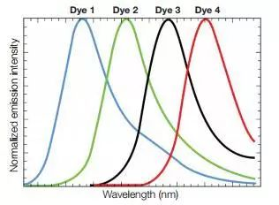
每个染料在被激光激发时发出不同波长的光，因此可以在一次毛细管电泳中检测和区分四种颜色代表的四种碱基。
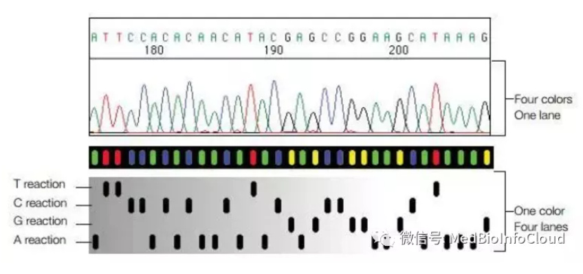
二.illumina测序
illumina是当前最热的二代测序公司，它测序的特点是使用带有可以切除的叠氮基和荧光标记的dNTP进行合成测序，由于dNTP上的叠氮基的存在，每个链每次测序循环只会合成一个碱基，由于A、C、G、T四种碱基所携带的荧光各不相同，因此读取此时的荧光就可以得知此时的碱基类型，重复这个过程，所有碱基序列就可以完成测定了。
illumina测序的工作流程
建库->桥式PCR扩增->Read1测序->Read2测序->双端测序（Read3）
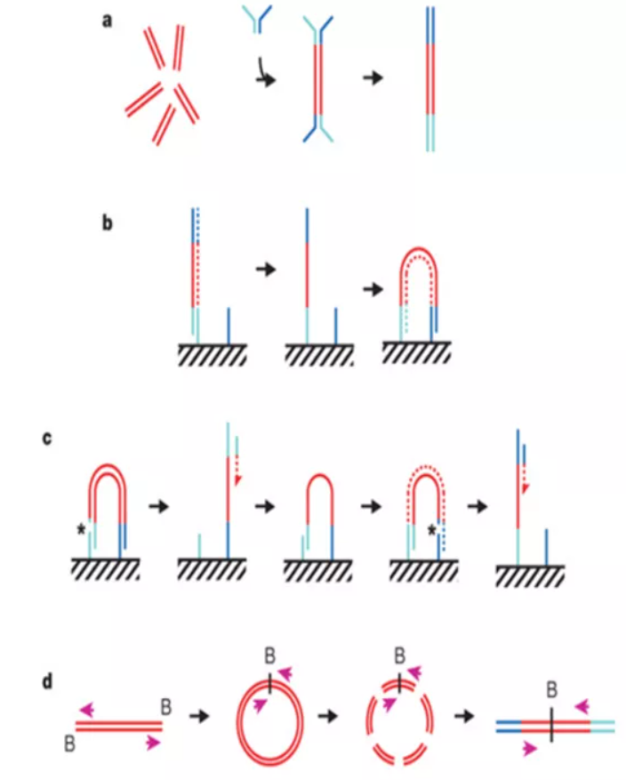
1. 建库
使用超声将DNA样品打碎成小片段，接着T4酶修补末端， klenow酶在3‘末端加A，然后DNA连接酶将测序引物和DNA片段连接，即制成测序文库。
如图所示，即是建好的文库片段。其中a与e分别与flowcell中的P5与P7互补配对。b-c是Read1引物结合位点，c'-d是Read2结合位点，用于读取barcode，多样品在同一lane测定时才需要检测，d'-c是Read3结合位点，双端测序时才会用到。i是index，也叫barcode。（c与c'互补配对，d与d'互补配对）
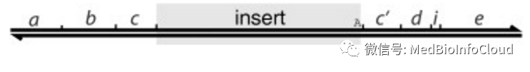
2. 桥式PCR扩增
建好的文库，会加入到flowcell的lane里面进行桥式PCR扩增。
flowcell是什么？illumina测序仪中实际进行的测序反应位于flowcell（流动池）中，如图就是一个典型的illumina flowcell，一个flowcell有8条lane（通道），每个lane内表面共价结合了大量的P5、P7短序列（你可以将其想象为一个牙刷，一个平面上有大量的“短发”状序列），P5与P7将会用于结合构建好的文库片段。
lane：每一个flowcell上都有8条泳道，用于测序反应，可以添加试剂，洗脱等；
reads ：指测序的结果，1条序列一般称为1条reads；
双端测序 ：指一条DNA分子模版链，除了从正向测一遍，还可以从DNA的负向再测一遍；
adapter ：测序中需要的一段特定的序列，有类似于引物的功能；
index ：也称为barcode，接头上的一段独特序列，用于区分样本；
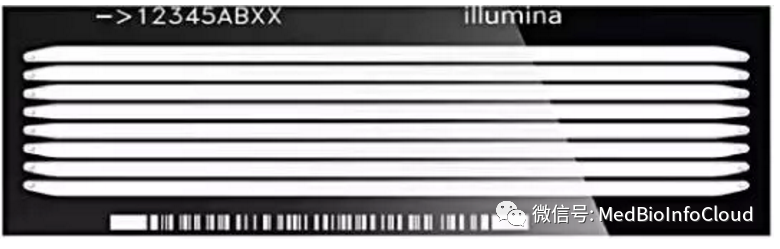
* 模板结合，并合成第一链 将文库加入到一个lane中去，由于文库两端的序列是和lane内的P5和P7互补的，因此文库片段会和lane内表面互补结合，如果此时加入dNTP和酶，调至延伸温度，那么就会开始进行第一链合成。
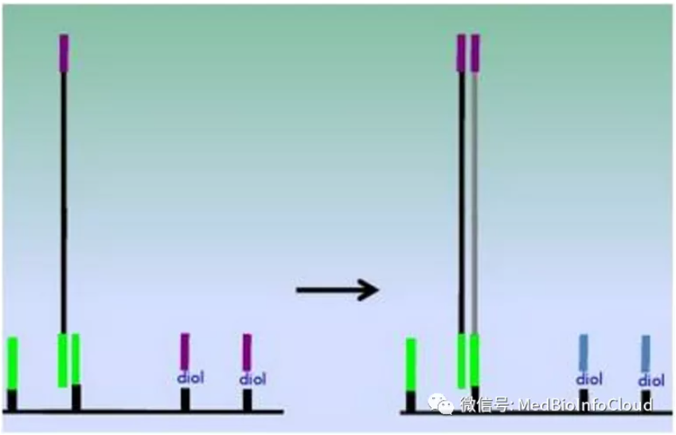
* 解链，第二链合成 加入碱液，解开双链，并使用液流冲洗lane，由于新合成链末端的P5和P7已经共价结合在lane上，所以新合成的链会留下来。接着使用中性溶液中和lane内环境，再降至退火温度，那么新链的游离端就会和lane上的其他P5或P7进行碱基配对结合，形成一个桥状，如图所示。
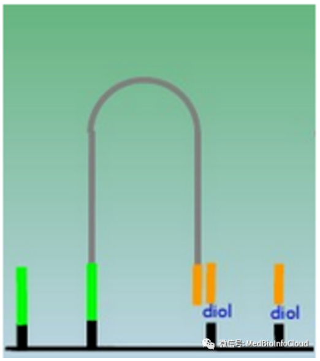
此时如果加入dNTP和酶，并调至延伸温度，那么就会开始进行第二链合成。
* 多次PCR扩增 经过多次循环之后，那么DNA链的数量，就会以指数方式增长，形成如图中所示的大量的DNA簇。
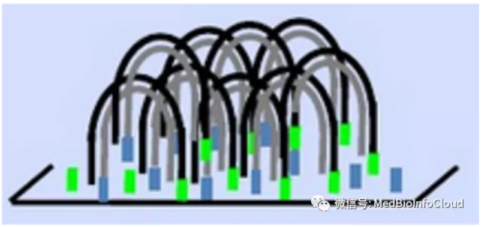
* 制备DNA单链 DNA链扩增达到要求之后，将其中一个链切断（P5端），碱液变性并冲走，剩余即是可以用于后续测序的单链DNA了，并使用中性液中和lane内环境。
3. Read1测序
* 加入特殊dNTP和酶合成第一个碱基：DNA单链制备完成之后，加入Read1测序引物与DNA单链杂交，然后再加入特殊制备的dNTP和聚合酶即可开始测序反应。这里的dNTP有两个特点：3‘端被叠氮基封闭了、携带一个荧光基团。因此每次反应只能延伸一个碱基，接着读取此时的荧光就可以得知DNA链上的碱基。
* 切去叠氮基和荧光基团，开始第二轮测序： 接着将叠氮基和荧光基团切去，液流冲走，重新加入荧光标记的叠氮dNTP和酶，扫描此时的荧光，测出第二个碱基是哪一种。
重复这个过程，即可将全部的DNA序列测定。
4. Read2（barcode）测序
由于illumina测仪器的测序能力太强了，往往单个lane就足够测很多组样品数据，因此为了充分使用测序仪，会同时在单个lane里面测定多组样品，而barcode（又叫index）就是用来区分不同的样品的。
barcode一般位于文库片段的P7端，在P7和样品DNA片段之间，illumina推荐使用12个barcode，长度6个碱基。
* 去除Read1链 在对barcode测序之前，需要加入碱液，先将刚才合成的Read1新链解开，然后液流冲走，使用中性液中和lane内环境。
* 继续测序6-8个碱基 接着加入Read2引物，继续测序6-8个碱基即可。
5. 双端测序
在读完Read1之后，可以选择对此时的DNA序列反向再读一次，从而在单次制备文库的情况下，将illumina的有效 测序长度增加了一倍。
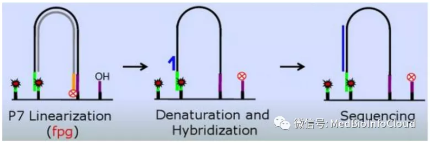
* 重新合成第一链 在Read3测序之前，先加入dNTP和酶，再次合成第一链（同Read1序列相同），图中所示黑色链即是新合成链。
* 切除并去除Read1模板链 然后切割位P7端，碱液冲洗将此时的模板链去除。如图中所示，灰色链即是Read1的模板链，已将P7端切开。
* 开始Read3测序 然后加入Read3引物，反方向再测序一次，测序过程同Read1类似。如图中所示，蓝色链为Read3的引物及Read3序列。
Read2与Read3的引物位置一般是重合的，碱基恰好互补，方向相反，见本文图一的d-c'与c-d'。
6. illumina测序质量控制
碱基识别
illumina测序的flowcell其实是一个非常精密的装置，它的每个lane里面分为上下表面，每个表面上有3个swath，每个swath有16个Tile，每个Tile在扫描的时侯，会根据4种颜色，产生4张照片，每张照片分别代表A、C、G、T四种碱基的信息。
然后数据处理软件会通过对4张照片上的亮点相互比对，找到最合适的、匹配的位置，并把4种颜色的4张照片，组合在一起，变成一张有4种颜色的彩色照片（如图所示）。
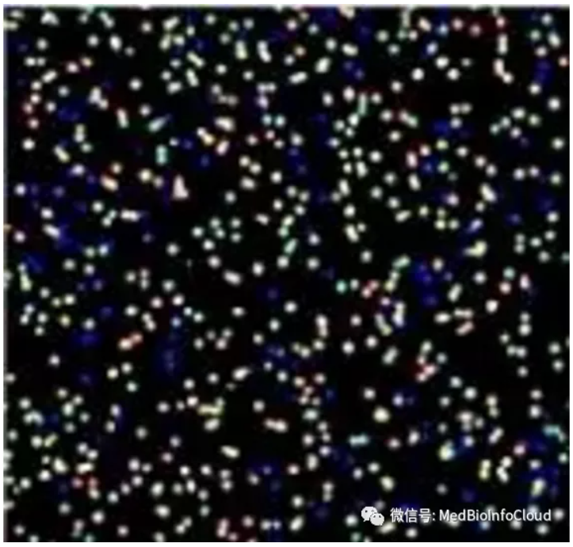
每一个循环会生成一个组合彩色图片，每一个光点就是一个碱基信息，整合全部测序循环的碱基信息之后，就会得出一个DNA的Read。
Phasing和Prephasing
在illumina测序步骤的桥式PCR之后，会生成大量的DNA簇，这些簇内的DNA序列都是一样的。每个簇大约有5k-10k个DNA链，理想状态下，每一次测序循环之后，每一簇的几千个DNA会同时增长一个碱基。
但是实际上总有少量的DNA分子没有延长，这种现象就是Phasing。Phasing一般和酶活不足有关。
而有些时候，一个DNA链有可能延长了2个碱基，而这种现象就叫做Prephasing。Prephasing是由于叠氮dNTP的叠氮基丢失所致。
在测序时，从第12个循环开始，就要把Phasing和Prephasing的影响纳入考虑。
Chastity 和 Pass filter
为了对光点当中荧光素的纯粹程度进行描述，Illumina公司定义了个标准，叫“chastity”，Chastity的定义就是浓度最高的那个荧光素的量，去除以“它自己 + 排名第二的荧光素的量的和”。Chastity大于0.6代表此碱基可信度较高，是一个“好碱基”。
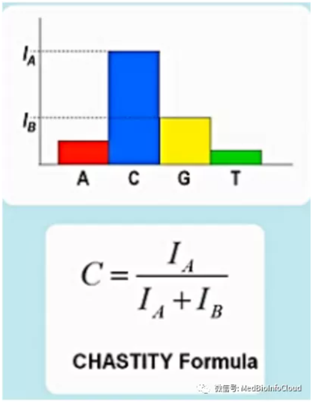
由于桥式PCR生成的大量DNA簇并非都是单克隆的DNA，在碱基识别时，就很有可能会在杂合DNA克隆的DNA簇上产生误读。而Chastity的生物学意义是指的去除那些杂合的DNA簇，只保留单克隆DNA簇以保证测序质量。
illumina对每个read的质量都要做一个检验，这个检验就叫“pass filter”检验。检验的标准，是看前25个碱基当中，有几个是“坏碱基”。如果只有一个或者没有坏碱基，则Pass filter就通过；如果有超过一个以上的坏碱基，Pass filter就不能通过。
Quality Score
一个碱基的Quality Score，也就是这个碱基的质量分数（Q值）。它是通过这个碱基被误判的可能性，换算出以10为底的对数，再乘以“-10”得到的一个数字。
以Q30为例，Q30代表碱基可信度为99.9%，那么其被误判的几率就是0.1%，于是-10*lg(0.1%)=30。也就是说，如果一个碱基测序的可信度为99.9%，就代表其达到了Q30质量标准。
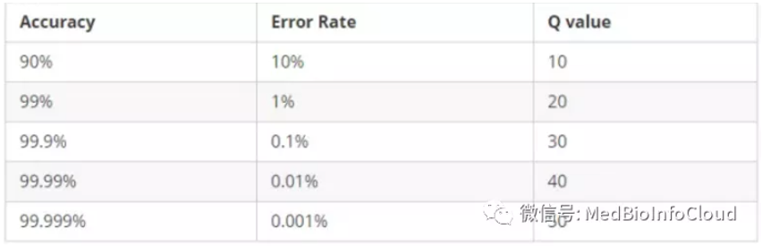
那么，所谓的“Q30比例”，就是在全部PF数据当中，达到或者超过Q30质量标准以上的数据占所有PF数据的比例。Q30比例，可以表征一次测序过程的质量好坏。
3.第三代测序技术
第三代测序技术是一种集高通量、快速度、长读长及低成本等多种优点于一身的新型测序技术。它大特点是无需进行PCR扩增，可直接读取目标序列，因此假阳性率大大减少，同时避免了碱基替换及偏置等常见 PCR 错误的发生。就精准度来说，第三代测序技术与第二代测序技术相比并不具有优势，错误率通常在15%左右。但随着测序深度的加大及使用更正软件可达到 99.9%的准确率， 因此第三代测序技术具有广泛的应用前景。
以Pacbio平台为代表的SMRT(Single-Molecule Real Time Sequencing,单分子实时测序)测序技术具有高通量、长读长的特点。
基本原理：其中PacBio SMRT技术其实也应用了边合成边测序的思想，并以SMRT芯片为测序载体。基本原理是：DNA聚合酶和模板结合,4色荧光标记4种碱基（即是dNTP）,在碱基配对阶段,不同碱基的加入,会发出不同光,根据光的波长与峰值可判断进入的碱基类型。同时这个DNA聚合酶是实现超长读长的关键之一,读长主要跟酶的活性保持有关,它主要受激光对其造成的损伤所影响。PacBio SMRT技术的一个关键是怎样将反应信号与周围游离碱基的强大荧光背景区别出来。他们利用的是ZMW（零模波导孔）原理：如同微波炉壁上可看到的很多密集小孔。小孔直径有考究,如果直径大于微波波长,能量就会在衍射效应的作用下穿透面板而泄露出来，从而与周围小孔相互干扰。如果孔径小于波长,能量不会辐射到周围，而是保持直线状态（光衍射的原理）,从而可起保护作用。同理,在一个反应管(SMRTCell:单分子实时反应孔)中有许多这样的圆形纳米小孔, 即 ZMW(零模波导孔),外径 100多纳米,比检测激光波长小(数百纳米),激光从底部打上去后不能穿透小孔进入上方溶液区,能量被限制在一个小范围(体积20X 10-21 L)里,正好足够覆盖需要检测的部分,使得信号仅来自这个小反应区域,孔外过多游离核苷酸单体依然留在黑暗中,从而实现将背景降到最低。另外，可以通过检测相邻两个碱基之间的测序时间，来检测一些碱基修饰情况，既如果碱基存在修饰，则通过聚合酶时的速度会减慢，相邻两峰之间的距离增大，可以通过这个来之间检测甲基化等信息（图7）。SMRT技术的测序速度很快，每秒约10个dNTP。但是，同时其测序错误率比较高（这几乎是目前单分子测序技术的通病），达到15%,但好在它的出错是随机的，并不会像第二代测序技术那样存在测序错误的偏向，因而可以通过多次测序来进行有效的纠错。
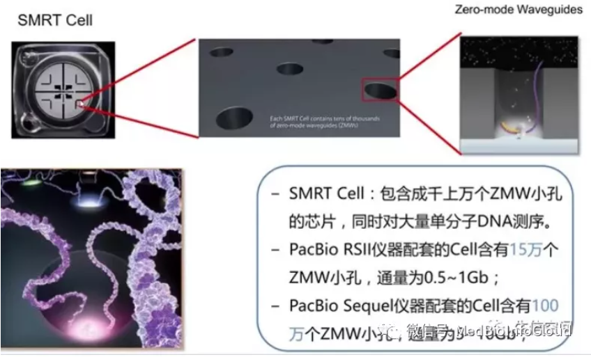
主要过程：如下图所示，类似于Illumina部分展示的模式图，也是边合成边测序。
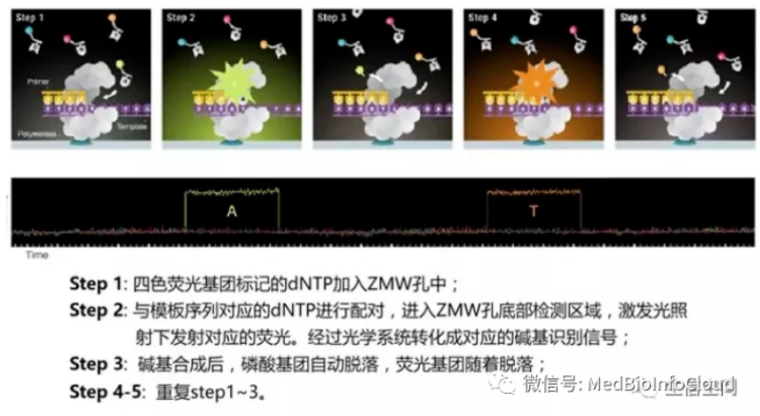
纳米孔测序技术是单分子实时测序的新一代技术，主要是通过ssDNA或RNA模板分子通过纳米孔而带来的“电信号”变化推测碱基组成进行实时测序。
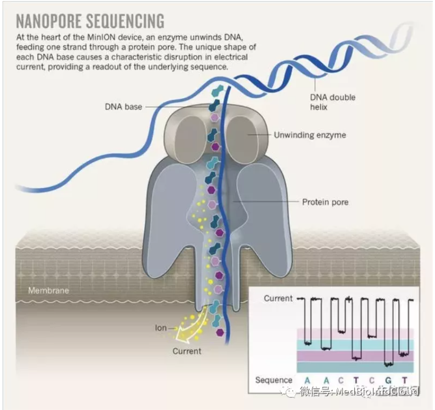
基本原理：当纳米孔充满导电液时，两端加上一定电压，分子模板通过纳米孔生成可测量电流。纳米孔的直径只能容纳一个核苷酸，单链模板就会在电场作用下依次通过纳米孔而引起电流强度变化，通过检测相应的电流峰判断碱基，实现实时测序。
参考资料：
【1】https://v.qq.com/x/page/k0191u4ipv1.html
【2】https://mp.weixin.qq.com/s/jWjKQweoLnUH_9NE9egS8A
【3】https://mp.weixin.qq.com/s/eeL5hziKzoe9gJCsl9xRmQ
【4】http://mp.weixin.qq.com/s/RAk_JogLhJ_lAg-iWLtf0A
【5】http://v.youku.com/v_show/id_XNjYyOTQ0ODcy.html
【6】https://mp.weixin.qq.com/s/cxN9huvXgwIwn4ufj4LCpg
【7】https://mp.weixin.qq.com/s/ISt0M8yN5-o_GWr8hyg3YQ
更新: 2026-11-01 12:02:43
原文: https://www.yuque.com/doublehelix/bioinfonotes/fdkwby